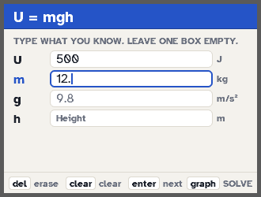

Solve U = mgh for any variable on a TI-84 Plus CE
Worked example: a 12.5 kg box has 500 J of gravitational potential energy. How high is it?
By hand
U = mgh, so h = U / (mg) = 500 J / (12.5 kg × 9.8 m/s²) = 4.08 m. With 500 J given to 1 sig fig, the strict answer is 4 m.
On the calculator with PHYSPRO
Open Work & energy → U = mgh, fill in U and m, leave h empty and press GRAPH. It rearranges the formula, plugs in with units and rounds to the right sig figs.


Solve these on your TI-84 Plus CE
PHYSPRO has every formula on this page. Type what the problem gives you and it solves for all the missing values, showing the plug-in line with units and the sig figs. Free.
Get PHYSPRO freeDid it help? Tip $1 on Venmo: @FormulaFoundry